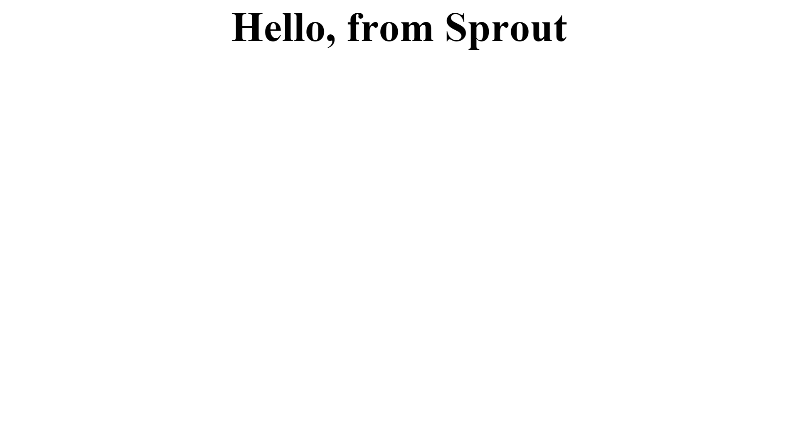

Getting Started
Sprout by HP creates a revolutionary space that begs for creative play. The projected workspace surface allows natural and easily accessible actions. From sketching with your finger to capturing images instantly, there is no limit to what’s possible.
This document will helps you get started with developing a sprout application using JavaScript.
Before you start
The current JavaScript framework is based on an open source project NW.js. NW.js is an app runtime based on Chromium and node.js. Find more information on NW.js at "https://github.com/nwjs/nw.js
This guide walks you through the essential things needed to create a sprout application using NW.js.
Hello Sprout!
This section will help you create your first sprout application very quickly.
-
Download the sprout NW.js bundle
We have prepared a NW.js application, bundled with the sprout API, allowing you to create your sprout application very quickly. You may download it from https://sprout.hp.com/developer/develop/download. This is based on NW.js v0.12.1 (based off of IO.js v1.2.0, Chromium 41.0.2272.76).
Note: If you would like to create an application using a different NW.js version, copy the sprout and edge node modules from this bundle. You may need to recompile edge.js based on your NW.js version.
-
Run the application
Extract the SproutHPJSFramework.zip file. Then, run nw.exe; A window opens with the following page:
This runs the index.html file that is in the root directory. If you would like to change the initial file, open package.json and change the property “main”
Close the window.
-
Add a mat window
To open a window on the mat, you will use the sprout API
openMat. Open index.html in a text editor and add the following code inside the script tags.<script type="text/javascript"> var sprout = require('sprout'); var matHandle = sprout.openMat('mat.html'); </script>require('sprout')allows you to load the sprout node module and use it in your code.openMat()accepts an argument on which URL to load. In the example above, we just loaded a simple html file to show on the mat. This function returns a handle that allows you to communicate with the mat.Save your code and run nw.exe again. You should be able to see a window on the mat.

That's it! You have successfully created your sprout application.
Refer to the API section on the left for the complete list of APIs that you can use
Debugging
You must enable the toolbar to access the Console. Set the attribute "toolbar": true in package.json.
Click the menu button on the top right to access the Developer Tools window, which contains the Console. There is a separate console for both the screen and mat windows.
Running Sample Applications
Sample applications are provided in the HP Sprout Developer Portal. Follow these steps to run the sample application:
- Download the JS Framework
- Download the Sample Application and save it to the JS Framework folder (APPNAME.nw)
- To run the application, either drag the APPNAME.nw to nw.exe or type
nw.exe APPNAME.nwin the command line
To view the code, rename APPNAME.nw to APPNAME.zip and then extract the package
What else can I do?
If you want your application to cover the entire vertical screen, including the Windows taskbar, add the property "fullscreen": true to your package.json file. Do not use the kiosk attribute, which renders the mat widow onto the vertical screen.
The different manifest options are documented in https://github.com/nwjs/nw.js/wiki/Manifest-format